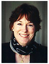

| Marcy
Jackson Director Marcy acquired an international perspective early as the eldest child in a Navy family; volunteered as an English teacher in a Japanese high school at 15; went on to major in anthropology at George Washington University in Washington, D.C., continuing at UC Berkeley with an MA in linguistics. After finishing her degree she taught in a number of programs at local colleges including University of San Francisco where she met colleagues who later joined together to start the English Center for International Women at Mills in May 1977. In the last twenty years, Marcy has worn every hat at ECIW. Since 1988, she has served as the executive director. In the last twelve years, the budget for ECIW has more than doubled; the mission of the Center has expanded to include Career Advancement for women; and ECIW has become known as an innovative service provider for the Oakland Private Industry Council, an integral part of the English curriculum of half a dozen Japanese Women's Colleges, and an important feeder school for Mills College as well as other colleges and universities across the U.S., and an active member of the Oakland One Stop system and the regional EastBay Works. Marcy lives in Berkeley with her two boys, John, a recent graduate of UC Santa Barbara and Colin, a student at UC Santa Cruz. |